En 1869, à Londres, pour exploiter du charbon dans le Sud de la Russie et pour implanter des usines pour fabriquer du fer, la Société de productions houillère, de fer et de rails de la Nouvelle Russie fut fondée.
Selon l'accord conclu avec le gouvernement de l'Empire russe, en août 1870, au bord la rive droite du fleuve Kalmius, à sept kilomètres au sud de la station Alexandrovka du district de Bakhmout en province Ekaterinoslavsk, la Société de la Nouvelle Russie lança la construction d'une usine métallurgique. Le directeur général de l'usine, du début de sa construction jusqu'à 1889, fut John HUGHES, spécialiste anglais, ingénieur-métallurgiste.
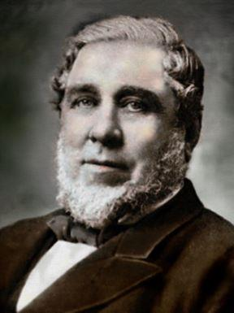Le projet de construction de l'usine fut élaboré en Angleterre. L'équipement et les réfractaires pour la construction furent également fournis par l'Angleterre.
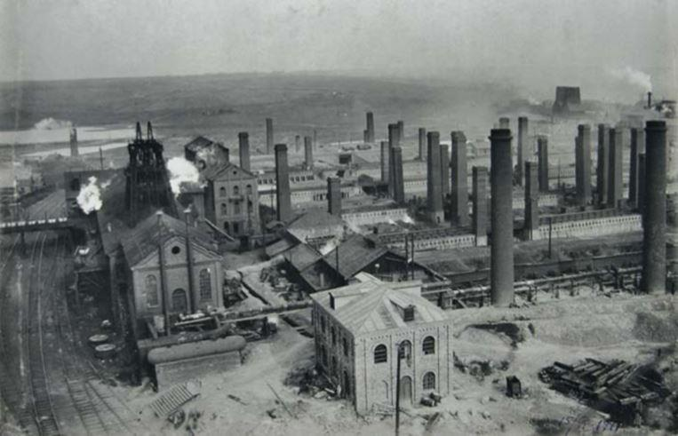La construction d'un haut fourneau de 240 m3 fut achevée en avril 1871 et le 21 du même mois, il fut mis en service. Mais après quelques jours, le fourneau fut arrêté, car son revêtement intérieur ne supporta pas des températures élevées. La réparation du haut fourneau dura jusqu’au janvier 1872.
Le 24 janvier 1872, le haut fourneau fut de nouveau mis en service et la fusion régulière de la fonte fut lancée. Cette journée fut considérée comme la journée de fondation de l'Usine métallurgique de Donetsk.
À cette époque, les 24 bas-foyers et 13 fours à braser fut construits à l'usine, en 1873 – des laminoirs pour produire des rails de fer, des bandes et des fers profilés, en 1879 – des fours Martin. L'Usine commença à travailler au cycle métallurgique complet. Dans les années 1890, l'usine devint l'une des plus grandes entreprises métallurgiques de l'Empire russe, elle occupait la première place dans la production de la fonte et de l'acier.
Les témoignages de haute qualité permirent à l'usine de recevoir le droit de représenter l'emblème de l'Empire russe sur ses produits dès 1899, mais elle reçut ce qui était alors considéré comme la plus haute distinction – le Grand Prix de l'Exposition mondiale des aciéries en 1900 à Paris (France).
En 1910, l’usine avait six hauts fourneaux et neuf fours Martin, des fours à coke, 25 fours de chauffage et de recuit, deux convertisseurs Bessemer, des laminoirs – à lingots, à rails, à tôles, quelques sortes de laminoirs à profilés, plusieurs ateliers auxiliaires.
Avec la croissance de l'entreprise, l'administration de HUGHES résolvait également des problèmes sociaux : en 1871, le premier hôpital usinier fut construit. En 1900, il y avait environ 100 lits stationnaires. Le service hospitalier était gratuit pour les ouvriers. En 1877, une école publique fut ouverte pour les enfants des ouvriers, puis encore deux autres. À l'usine, fut organisé un orchestre amateur qui jouait dans un espace ouvert chaque samedi. Un parc fut construit pour le repos, etc.
En janvier 1918, les entreprises de la Société de la Nouvelle Russie, y compris l'usine métallurgique, furent nationalisées. À la fin de 1921, la reconstruction de l'usine détruite pendant la guerre civile fut lancée. Les capacités de production augmentaient progressivement.
Au début de la Grande Guerre patriotique, l'Usine produisait des nuances d'acier spéciales pour l'industrie de la défense, des munitions à larguer et des grenades. En octobre 1941, l'entreprise fut arrêtée, certains équipements furent démantelés et envoyés à l'Oural à la ville de Serov.
L'usine ne fonctionna plus à partir d'octobre 1941 et jusqu’en septembre 1943. Des tentatives des envahisseurs fascistes de faire redémarrer les ateliers échouèrent. La société minière et métallurgique allemande « Ost », qui était un exploitant de la ville au moment de l'occupation, coupa l'équipement de l’usine en ferraille et l'envoya en Allemagne. Durant leur retraite en septembre 1943, les troupes allemandes firent exploser les structures de l'Usine.
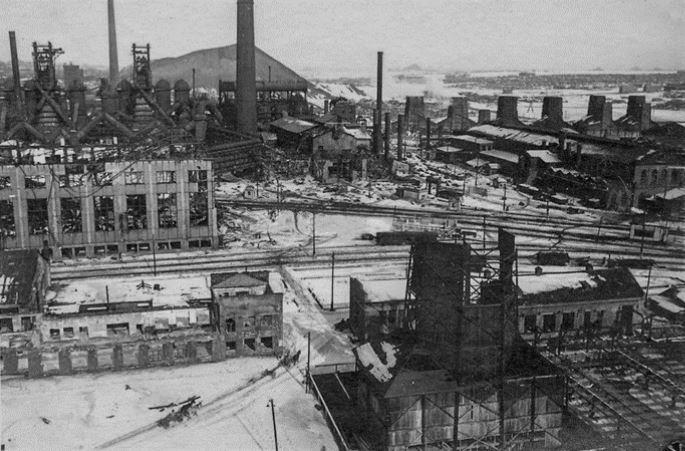Après la libération de la ville par les troupes soviétiques, l'usine fut reconstruite. En février 1944, l'un des fours Martin fut mis en service, en mars - un haut fourneau, puis un laminoir.
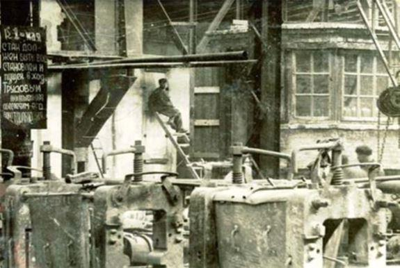Simultanément avec les travaux de reconstruction, il y eut une rénovation des unités. En 1950, la production de l'usine dépassa le niveau d'avant-guerre. L'usine développa et introduisit pour la première fois dans le monde un système de refroidissement par évaporation d'éléments des fours Martin. En 1960, l’installation industrielle de coulée continue de l’acier fut mise en service. Ce fut là encore une première mondiale. En 1970-1980, la reconstruction et la modernisation de toutes ses installations de l’usine métallurgique furent réalisées.
L'effondrement de l'URSS, la perturbation des relations économiques entre les entreprises, affectèrent le fonctionnement de l'usine. En 1996, l'entreprise fut transformée en Société anonyme à capital ouvert « Usine métallurgique de Donetsk (DMZ) ».
À la fin de 1999, la mini-usine métallurgique « Istil-DMZ », créée sur la base des ateliers électrométallurgiques et dégrossisseur, fut séparée de l'entreprise.
Depuis 2012, l'Usine métallurgique de Donetsk n'avait produit que de la fonte commerciale, l'usine d'acier ayant été arrêtée pour être reconstruite. Durant les années 2014 et 2015, l'usine ne fonctionnait pratiquement plus.
En 2016, le groupe « Donetskstal » a presque doublé la production de fonte et a commencé à développer de nouveaux types de produits.
La mini-usine métallurgique « Istil-DMZ » a changé plusieurs fois de propriétaires. Au milieu des années 2000, elle était membre du groupe britannique Istil Group, fondé par l'homme d'affaires pakistanais Mohammed Zahur. En 2008, l'Usine a été acquise par le groupe russe « Estar ». En 2011, l'entreprise est devenue propriété de la société minière et métallurgique « Mechel ». En 2009, le nom de l'entreprise a été changé pour devenir « Usine électrométallurgique de Donetsk » (DEMZ). En 2012, DEMZ a arrêté ses activités de production. En raison de la crise mondiale, le propriétaire russe a rencontré des problèmes majeurs avec les créanciers, et l'entreprise de Donetsk est devenue la propriété de l'« Alfabanque » russe, puis – celle de l'entreprise minière et métallurgique russe « Mechel ». Du fait des dettes du propriétaire, la société n'a pas prêté attention à l'entreprise et l’a mis en sommeil et l'entreprise elle-même a été sérieusement ruinée. Durant les actions militaires de 2014 elle s’arrête totalement.
En 2016, les autorités de la République populaire de Donetsk (RPD) introduisent une administration d'État temporaire à l'Usine électrométallurgique de Donetsk et ont établi sur sa base une entreprise d'État, sans la nationaliser, sous le nom l'Usine métallurgique Hughesovskiy (UMH), dans laquelle on a commencé les travaux de restauration. Le Ministère de l'Industrie et du Commerce de la RPD a déclaré que les autorités de la République sont prêtes à restituer les biens de DEMZ à « Mechel », si cette société russe promet de reprendre le travail de l'entreprise.
L’étape de restauration de l'entreprise a commencé…
Bien sûr, pour mener à bien des travaux de réparation et de restauration à grande échelle, les personnes qui connaissaient l’Usine comme leur poche étaient nécessaires. Par conséquent, ils ont recherché des anciens employés et les ont invités à revenir. Beaucoup d’eux ont répondu positivement. Malgré une incertitude et une situation difficile, ils y ont cru et sont venus reconstruire l'usine par leurs propres moyens.
Je suis arrivé à l'entreprise après être devenu diplômé de l'université à la fin de l'été 2017, environ un an après la création de l'Usine métallurgique Hughesovskiy, et est immédiatement tombé dans le vortex de préparation pour lancer l'entreprise. Nous avons dû travailler dur pour nettoyer et restaurer l'équipement et les unités après sa désolation et les ramener à un état normal de fonctionnement. Je peux seulement imaginer comment était l’entreprise après son abandon et quel travail laborieux les employés de l'entreprise ont réalisé pendant durant tous ces mois pour représenter l'entreprise sous la forme dans laquelle elle existe maintenant.
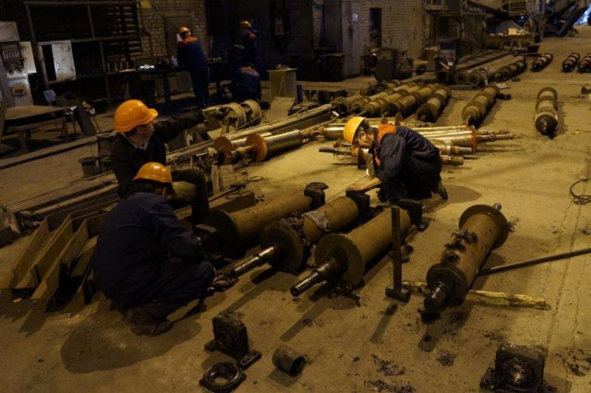L'état de tout l'équipement du secteur du four électrique était déprimant. Il manquait des choses élémentaires : pas de lumière, pas d'eau, pas de chauffage. Pendant la pluie, les filets d’eau coulaient dans l’atelier. Tout était tellement à l'abandon qu'il était impossible de regarder sans larmes, - rappelle l'un des employés de l’UMH.
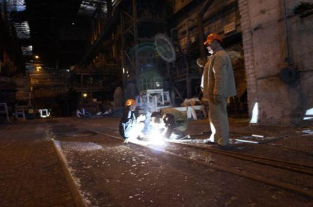Dans le cadre de la restauration de l'entreprise d'État « Usine métallurgique Hughesovskiy », de nombreux travaux de réparation ont été réalisés dans les ateliers de production. La tâche la plus difficile et la plus importante a été à l’atelier du four à arc électrique. L’atelier était hors du service pendant plusieurs années, et plus d'une centaine de personnes ont travaillé à sa restauration. Le front de travaux était énorme, il fallait commencer par les petites choses : une réparation d'éclairage, des radiateurs de chauffage central, de la canalisation d'eau potable, des systèmes d'alimentation en air comprimé, des chargeurs.
Sans résoudre rapidement ces problèmes, l'équipe de l'atelier n'a pas pu procéder à l'un des étapes de travail le plus important et le plus difficile – une révision et une réparation des unités de production d'acier électrique de la firme italienne Danieli.
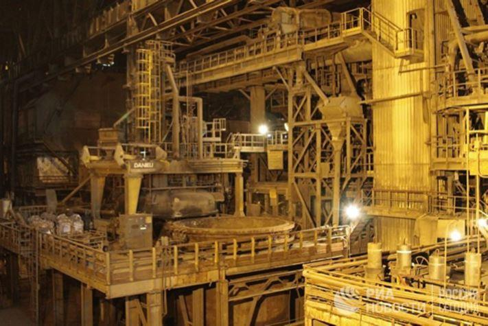Après plus d'un an de fonctionnement, toute la chaîne de production a été remise en mode de fonctionnement. Le travail titanique a été fait. Compte tenu de l'ampleur de la tâche, Alexander ZAKHARCHENKO a déclaré que cela dût être une reconstruction complète et pas une restauration de l'Usine, et que c'était une grande victoire pour les employés de l'Usine et la République.
L'atelier des chemins de fer est complètement devenu opérationnel : cinq locomotives diesel ont été réparées, ce qui suffira à transporter les produits de l’UMH.
L’atelier de ferrailles est également devenu prêt à recevoir et à recycler les chutes de métal : 9 ponts roulants électriques, 2 machines de chargement Fuchs et les ciseaux AKROS ont été réparés.
Ainsi, l'atelier principal de fabrication d'acier électrique fut entièrement prêt à fonctionner. Ici, l'équipement onéreux du four à arc électrique, de la machine de coulée continue d’acier, de l’installation de « four à poche » ont été restaurés. On a remonté les pièces de rechange d'importation et les composants sur l'équipement métallurgique correspondant.
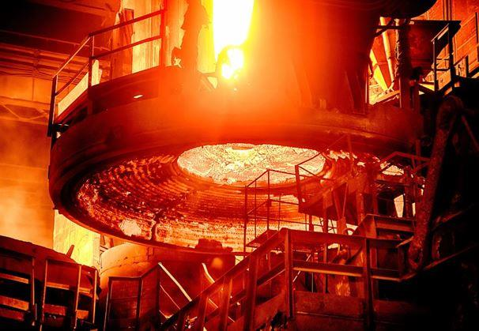Après des mois de travail, en septembre, la première fusion technologique est réalisée dans cette entreprise d'État.
« Le 28 septembre, l'Usine métallurgique Hughesovskiy a réalisé avec succès la première fusion technologique. Durant un an et quatre mois, nous avons complètement recréé la production de métal, restaurée, remis les ateliers en service. La République Populaire de Donetsk a lancé en service son Usine métallurgique. En octobre, nous obtiendront du premier métal d'affaires dans le volume prévu », - a déclaré le chef de l'État.
Quelques jours plus tard, le 5 octobre 2017, une grande entreprise industrielle est devenue active - l'usine d'État, l'Usine métallurgique Hughesovskiy est lancée. Le jour même, le premier acier a est fondu à l'usine, puis une billette carrée de 125 mm est fabriquée en coulée continue.
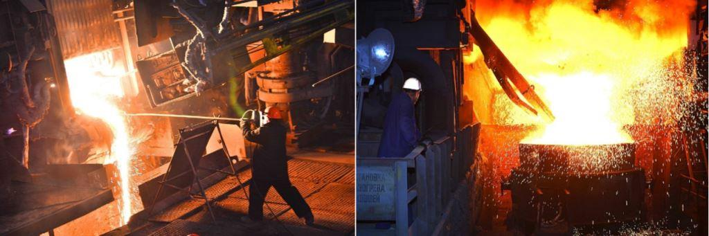Durant la réunion solennelle dans les ateliers de l’UMH, Alexandre ZAKHARTCHENKO, le chef de la République, a déclaré :
« Nous, en République, nous avons l'habitude de célébrer seulement des victoires militaires, mais aujourd'hui notre pays est obligé de noter cette victoire productive. Ce que vous avez fait de vos propres mains et grâce à votre fidélité à votre usine indigène ne peut pas être appelé une restauration. Vous venez de la reconstruire. Par conséquent, je crois que nous avons gagné la bataille pour UMH, ainsi que les batailles pour les villes de Debaltsevo, Ilovaïsk, Donetsk. Mes compliments cordiaux à vous pour votre travail et l'amour pour l'entreprise. C'est un mérite de chaque travailleur. Je tiens également à exprimer ma gratitude à Alexeï GRANOVSKIY, Ministre de l'Industrie et du Commerce, et à Alexander TIMOFEYEV, Vice-premier ministre. Je dirai toujours que je suis fier et heureux de vivre avec vous sur la même terre ! »
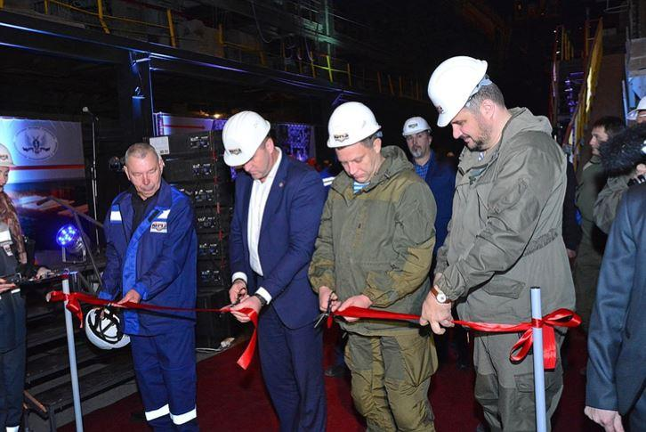En outre, dans son appel aux travailleurs de l'Usine, Alexander TIMOFEYEV, Vice-président du Conseil des ministres de la République et Ministre des revenus et des honoraires, a passé quelques parallèles :
« Les sceptiques ne se calmeront pas. Ils disaient avant que nous ne pourrions pas le faire, mais maintenant ils affirment qu'il n'y avait rien à faire. Seulement appuyez sur un bouton, et tout va tourner. Vous avez réussi à faire l’impossible. On peut dire que vous avez construit encore l'une des chambres de la maison qui s’appelle la République Populaire de Donetsk. C'est ce que vous avez fait pour les générations futures ! Je vous souhaite d'autres victoires et succès ! »
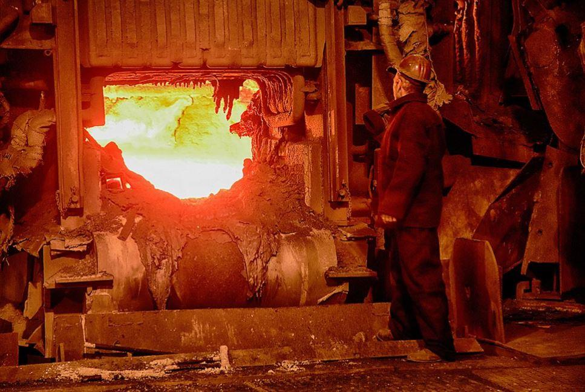Et maintenant, depuis plusieurs mois de travail, malgré des difficultés dans l'approvisionnement en matières premières, l’Usine métallurgique Hughesovskiy gagne sa capacité de production et offre à ses clients du métal de haute qualité. Chaque jour, moi, ainsi que des centaines de travailleurs, nous voyons la devise qui pend à la porte à l'entrée de l’Usine et qui, à mon avis, caractérise notre travail : « Difficile – ne signifie pas impossible. »
S.B.
Note :
L’article a été réalisé sur la base des informations de l’Agence russe de l’information internationale Novosti et des sources ouvertes. Merci à Guennady KLIAGUINE pour le soutien apporté à la rédaction de cet article en langue française.
Partager cette page